SO(3): 3D Rotations¶
The group of all rotations in the 3D Cartesian space is called 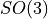 (SO: special orthogonal group). It is typically represented by 3D rotations matrices. The minimum number of components that are required to describe any rotation from is 3. However, there is no representation that is non-redundant, continuous, and free of singularities. We will now take a closer look at competing representations of rotations and the orientations they can describe.
Here is an overview of the representations and the conversions between them that are available in pytransform3d.
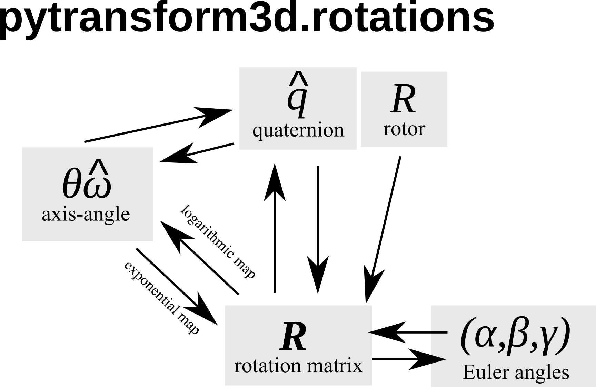Not all representations support all operations directly without conversion to another representation. The following table is an overview. If the operation is not implemented in pytransform3d then it is shown in brackets.
Representation |
Inverse |
Rotation of vector |
Concatenation |
Interpolation |
|---|---|---|---|---|
Rotation matrix
|
Transpose |
Yes |
Yes |
No |
Compact axis-angle
|
Negative |
No |
No |
(Yes) (2) |
Axis-angle
|
Negative axis |
No |
No |
SLERP |
Logarithm of rotation
|
Negative |
No |
No |
(Yes) (2) |
Quaternion
|
Conjugate |
Yes |
Yes |
SLERP |
Rotor
|
Reverse |
Yes |
Yes |
SLERP |
Euler angles
|
(1) |
No |
No |
No |
Modified Rodrigues parameters
|
Negative |
No |
No |
No |


![\left[\pmb{\omega}\right]](_images/math/0b9e14c5cc096d7fbff8198de5f08cb44ba42af5.png)


{kind=link}
Footnotes:
(1) Inversion of Euler angles in convention ABC (e.g., xyz) requires using another convention CBA (e.g., zyx), reversing the order of angles, and taking the negative of these.
(2) Linear interpolation is approximately correct.
Rotation Matrix¶
One of the most practical representations of orientation is a rotation matrix
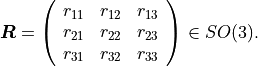
Note that this is a non-minimal representation for orientations because we
have 9 values but only 3 degrees of freedom. This is because
 is orthonormal, which results in 6 constraints
(enforced with
is orthonormal, which results in 6 constraints
(enforced with norm_matrix()):
column vectors must have unit norm (3 constraints)
and must be orthogonal to each other (3 constraints)
A more compact representation of these constraints is 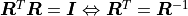.
In addition, 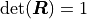 because we use right-handed coordinate system (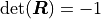 for left-handed coordinate systems).
Hence, the group is defined as
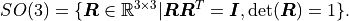
pytransform3d uses a numpy array of shape (3, 3) to represent rotation matrices and typically we use the variable name R for a rotation matrix.
Warning
There are two conventions on how to interpret rotations: active or passive rotation. The standard in pytransform3d is an active rotation.
We can use a rotation matrix 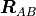 to transform a point
 from frame
from frame  to frame
to frame  .
.
Warning
There are two different conventions on how to use rotation matrices to apply a rotation to a vector. We can either (pre-)multiply the rotation matrix to a column vector from the left side or we can (post-)multiply it to a row vector from the right side. We will use the pre-multiplication convention.
This means that we rotate a point by
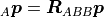
This is called linear map.
Note that using our index notation and conventions the second index of the rotation matrix and the left index of the point have to be the same. The rotation is applied incorrectly if this is not the case.
We can see that each column of such a rotation matrix is a basis vector
of frame with respect to frame .
We can plot the basis vectors of an orientation to visualize it.
Here, we can see orientation represented by the rotation matrix
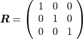
from pytransform3d.rotations import plot_basis
plot_basis()
Note
When plotting basis vectors it is a convention to use red for the x-axis, green for the y-axis and blue for the z-axis (RGB for xyz).
We can easily chain multiple rotations: we can apply the rotation defined by after the rotation 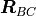 by applying the rotation
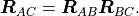
Note that again the indices have to align. Otherwise rotations are not applied in the correct order.
Warning
There are two different conventions on how to concatenate rotation
matrices. Suppose we have a rotation matrix  and another matrix
and another matrix
 and we want to first rotate by and then by
. If we want to apply both rotations in global coordinates, we
have to concatenate them with
and we want to first rotate by and then by
. If we want to apply both rotations in global coordinates, we
have to concatenate them with  . We can also express
the second rotation in terms of a local, body-fixed coordinates by
. We can also express
the second rotation in terms of a local, body-fixed coordinates by
 , which means defines new coordinates in
which is applied. Note that this applies to both
passive and active rotation matrices.
, which means defines new coordinates in
which is applied. Note that this applies to both
passive and active rotation matrices.
The easiest way to construct rotation matrices is through rotations about the
basis vectors with active_matrix_from_angle().
Multiple rotation matrices that were constructed like this can be concatenated.
This will be done, for instance, to obtain rotation matrices from Euler angles
(see Euler Angles).
Pros
It is easy to apply rotations on point vectors by matrix-vector multiplication.
Concatenation of rotations is trivial through matrix multiplication.
You can directly read the basis vectors from the columns.
No singularities.
Cons
We use 9 values for 3 degrees of freedom.
Not every 3x3 matrix is a valid rotation matrix, which means for example that we cannot simply apply an optimization algorithm to rotation matrices or interpolate between rotation matrices. Renormalization is computationally expensive in comparison to quaternions.
Axis-Angle¶
Each rotation can be represented by a single rotation around one axis. The axis can be represented as a three-dimensional unit vector and the angle by a scalar:
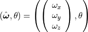
pytransform3d uses a numpy array of shape (4,) for the axis-angle representation of a rotation, where the first 3 entries correspond to the unit axis of rotation and the fourth entry to the rotation angle in radians, and typically we use the variable name a.
Note that the axis-angle representation has a singularity at 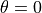 as there is an infinite number of rotation axes that represent the identity rotation in this case. However, we can modify the representation to avoid this singularity.
It is possible to write this in a more compact way as a rotation vector:
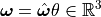
pytransform3d uses a numpy array of shape (3,) for the compact axis-angle representation of a rotation and typically we use the variable name a.
We can also refer to this representation as exponential coordinates of
rotation. We can easily represent angular velocity as
 and angular acceleration as
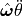 so that we can easily do
component-wise integration and differentiation with this representation.
In addition, we can represent
and angular acceleration as
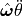 so that we can easily do
component-wise integration and differentiation with this representation.
In addition, we can represent  by
the cross-product matrix
by
the cross-product matrix
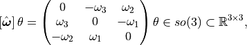
where ![\left[\hat{\boldsymbol{\omega}}\right] \theta](_images/math/df885cda063aa71320c69bb2645e3d4f76c950c4.png) is the matrix
logarithm of a rotation matrix and
is the matrix
logarithm of a rotation matrix and  is the Lie algebra of
the Lie group .
is the Lie algebra of
the Lie group .
Pros
Minimal representation (as rotation vector, also referred to as compact axis-angle in the code).
Can also represent angular velocity and acceleration when we replace
 by
by  or 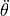 respectively,
which makes numerical integration and differentiation easy.
or 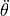 respectively,
which makes numerical integration and differentiation easy.
Cons
There might be discontinuities during interpolation as an angle of 0 and any multiple of
 represent the same orientation. This has to
be considered. Normalization is recommended.
represent the same orientation. This has to
be considered. Normalization is recommended.When 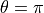, the axes
 and
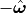 represent the same rotation, which is
a problem for interpolation.
and
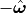 represent the same rotation, which is
a problem for interpolation.Concatenation and transformation of vectors requires conversion to rotation matrix or quaternion.
Quaternions¶
Quaternions are represented by a scalar / real part  and an vector / imaginary part
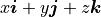.
and an vector / imaginary part
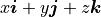.
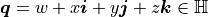
Warning
There are two different quaternion conventions: Hamilton’s convention defines 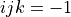 and the Shuster or JPL convention (from NASA’s Jet Propulsion Laboratory, JPL) defines 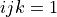. These two conventions result in different multiplication operations and conversions to other representations. We use Hamilton’s convention.
Read this paper for details about the two conventions and why Hamilton’s convention should be used. Section VI A gives further useful hints to identify which convention is used.
The unit quaternion space 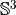 can be used to represent orientations with an encoding based on the rotation axis and angle. A rotation quaternion is a four-dimensional unit vector (versor) 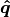. The following equation describes its relation to axis-axis notation.
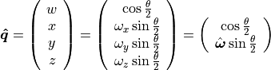
pytransform3d uses a numpy array of shape (4,) for quaternions and typically we use the variable name q.
Warning
The scalar component of a quaternion is sometimes the first
element and sometimes the last element of the versor. We will use
the first element to store the scalar component.
Warning
The antipodal unit quaternions and 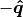 represent the same rotation (double cover).
Pros
More compact than the matrix representation and less susceptible to round-off errors.
The quaternion elements vary continuously over the unit sphere in 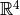 as the orientation changes, avoiding discontinuous jumps (inherent to three-dimensional parameterizations).
Expression of the rotation matrix in terms of quaternion parameters involves no trigonometric functions.
Concatenation is simple and computationally cheaper with the quaternion product than with rotation matrices.
No singularities.
Renormalization is cheap in comparison to rotation matrices: we only have to divide by the norm of the quaternion.
Cons
The representation is not straightforward to interpret.
There are always two unit quaternions that represent exactly the same rotation.
Euler Angles¶
A complete rotation can be split into three rotations around basis vectors. pytransform3d uses a numpy array of shape (3,) for Euler angles, where each entry corresponds to a rotation angle in radians around one basis vector. The basis vector that will be used and the order of rotation is defined by the convention that we use. See Euler Angles for more information.
Warning
There are 24 different conventions for defining euler angles. There are 12 different valid ways to sequence rotation axes that can be interpreted as extrinsic or intrinsic rotations: XZX, XYX, YXY, YZY, ZYZ, ZXZ, XZY, XYZ, YXZ, YZX, ZYX, and ZXY.
Pros
Minimal representation.
Euler angles are easy to interpret for users (when the convention is clearly defined) in comparison to axis-angle or quaternions.
Cons
24 different conventions.
Singularities (gimbal lock).
Concatenation and transformation of vectors requires conversion to rotation matrix or quaternion.
Rotors¶
Rotors and quaternions are very similar concepts in 3D. However, rotors are more general as they can be extended to more dimensions.
The concept of a quaternion builds on the axis-angle representation, in
which we rotate by an angle about a rotation axis (see black arrow in the
illustration above). The axis can be computed from the cross product of two
vectors (gray arrow). A rotor builds on a plane-angle representation, in which
we rotate with a given direction by an angle in a plane (indicated by gray
area). The plane can be computed from the wedge product 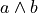 of
two vectors  and
and  , which is a so-called bivector. Although
both approaches might seem different, in 3D they operate with exactly the same
numbers in exactly the same way.
, which is a so-called bivector. Although
both approaches might seem different, in 3D they operate with exactly the same
numbers in exactly the same way.
Warning
The rotors  and 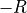 represent exactly the same rotation.
and 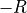 represent exactly the same rotation.
A rotor is a unit multivector
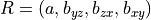
that consists of a scalar and a bivector
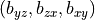. The components of a bivector constructed
by the wedge product of two vectors can be interpreted as the area of the
parallelogram formed by the two vectors projected on the three basis planes
yz, zx, and xy (see illustration above). These values also correspond to the
x-, y-, and z-components of the cross product of the two vectors, which allows
two different interpretations of the same numbers from which we can then derive
quaternions on the one hand and rotors on the other hand.
Warning
In pytransform3d our convention is that we organize the components of a rotor in exactly the same way as we organize the components of the equivalent quaternion. There are other conventions. It is not just possible to change the order of the scalar and the bivector (similar to a quaterion), but also to change the order of bivector components.
Pros and cons for rotors are the same as for quaternions as they have the same representation in 3D.
Modified Rodrigues Parameters¶
Another minimal representation of rotation are modified Rodrigues parameters (MRP)
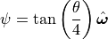
This representation is similar to the compact axis-angle representation. However, the angle of rotation is converted to 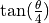. Hence, there is an easy conversion from unit quaternions to MRP:
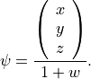
given some quaternion with a scalar and a vector
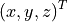.
pytransform3d uses a numpy array of shape (3,) for modified Rodrigues parameters.
Warning
MRPs have a singuarity at 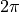 which we can avoid by ensuring the
angle of rotation does not exceed  .
.
Pros
Minimal representation.
Cons
The representation is not straightforward to interpret.
Normalization of angle required to avoid singularity.
Concatenation and transformation of vectors requires conversion to rotation matrix or quaternion.
References¶
Why and How to Avoid the Flipped Quaternion Multiplication: https://arxiv.org/pdf/1801.07478.pdf
Kindr cheat sheet: https://docs.leggedrobotics.com/kindr/cheatsheet_latest.pdf
Let’s remove Quaternions from every 3D Engine: https://marctenbosch.com/quaternions/
Applications of Geometric Algebra: http://geometry.mrao.cam.ac.uk/wp-content/uploads/2015/02/01ApplicationsI.pdf
Euler–Rodrigues formula variations, quaternion conjugation and intrinsic connections: https://doi.org/10.1016/j.mechmachtheory.2015.03.004
Terzakis, Lourakis, Alt-Boudaoud: Modified Rodrigues Parameters: An Efficient Representation of Orientation in 3D Vision and Graphics, https://link.springer.com/article/10.1007/s10851-017-0765-x
Hauser, Kris: Robotic Systems (draft), http://motion.pratt.duke.edu/RoboticSystems/3DRotations.html